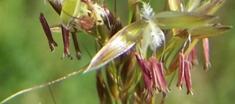
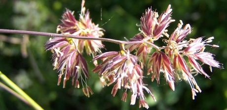
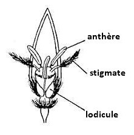
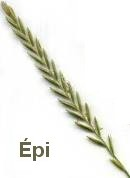
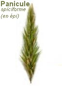
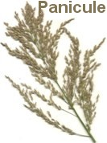
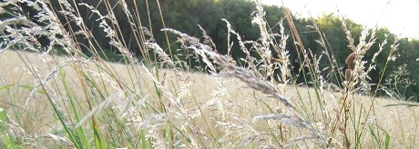
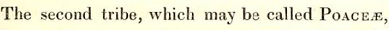

Poaceae
Poaceae
(R.Br.) Barnh., 1895
ou Gramineae, Juss., 1789 (nomen conservandum)
Une famille botanique importante
classée par
ordre alphabétique ou sous-familles (et leurs tribus)
de l'ordre des POALES

La famille des Poaceae est importante en raison de son très grand nombre d'espèces réparties dans de nombreuses tribus et de nombreux genres : le genre Poa, par exemple, regroupe à lui seul 800 espèces de par le Monde, mais seulement une dizaine dans l'Yonne (abstraction faite des sous-espèces et variétés).
Son importance n'est pas que numérique : un grand nombre d'espèces de cette famille sont une source précieuse de nutriments pour la faune domestique ou sauvage, aussi bien sous forme de fourrage vert durant la saison de végétation que sous forme de biomasse sèche en dehors de celle-ci.
Dans cette famille on trouve de nombreuses plantes cultivées.

Les Poaceae sont, pour environ 20 à 30 % d'entre elles, endophytées, c'est-à-dire que, sans provoquer aucun symptôme détectable, des champignons, dits endophytes, accomplissent tout ou partie de leur cycle de vie à l'intérieur des graminées concernées. Une des plus connues d'entre elles étant Schedonorus arundinaceus (Schreb.) Dumort., 1824, la fétuque roseau, bien présente dans l'Yonne et antérieurement connue sous le nom de Festuca arundinacea et en 2025 sous celui de Lolium arundinaceum.
Elles ont par ailleurs :
- Des tiges qui présentent sur leur partie la plus proche du sol des adaptations avec des racines fasciculées à chaque noeud et nommées :
- rhizomes (tiges souterraines)
Cf. Phragmites australis - stolons ("tige couchée radicante")
Cf. Poa trivialis - chaumes (toujours arrondis et généralement creux, donc dits fistuleux, sauf au niveau des nœuds)
Cf. Dactylis glomerata ou les bambous.
Ces tiges sont creuses, ce qui leur permet de ne pas se rompre.
Sans oublier les talles (du grec ancien θαλλος [tallos], mot qui signifiait jeune pousse ou jeune branche), des pousses végétatives qui permettent à certaines d'entre les Poacées d'être très cespiteuses.
Une talle est composée de racines et de feuilles (ayant chacune un méristème à sa base qui va redonner naissance à une autre talle).
Les feuilles des talles se nomment des innovations. - rhizomes (tiges souterraines)
- Elles ont des feuilles linéaires constituées d'une gaine, d'un limbe étroit et habituellement d'une ligule située à la jonction de la gaine et du limbe.
Cette ligule peut être de forme et d'aspect variables : membraneuse, velue ou remplacée par des poils, allongée ou courte, oblongue ou tronquée, denticulée, lacérée, pointue ou arrondie, ovale et même absente. - Leurs fleurs sont presque invisibles et généralement peu colorées et sans odeurs car elles n'ont pas à attirer les insectes pollinisateurs puisque c'est le vent qui dissémine la très grande quantité de pollen qu'elles produisent.
Leur mode de fécondation par pollinisation anémophile est donc incertain et aléatoire.
Elles peuvent être hermaphrodites ou soit mâles, soit femelles.
Compter leurs étamines présente un intérêt pour la détermination car leur nombre est variable contrairement à celui du pistil, toujours unique :- Trois le plus souvent
- Six chez le riz ou de nombreux bambous.
- Une ou deux chez certaines espèces cléistogames comme, par exemple, la vulpie queue de rat.
- Seize à plus de cent chez certains bambous tropicaux.
À la base de leurs ovaires se trouvent deux glumellules et elles sont enveloppées par 2 bractées que l'on nomme glumelles- l'inférieure étant la lemme qui est externe et qui présente généralement une arête (lemme aristée) dont les formes et la position sont variables et utiles à la détermination,
- et la supérieure, la paléole qui est interne,
{kind=link}

- L'épillet est leur unité morphologique de base.
Il peut être sessile ou pédonculé et est formé d'un axe que l'on nomme rachis et d'une ou plusieurs fleurs comprises entre 2 bractées ressemblant fort aux glumelles, les glumes.
Découvrez la morphologie des épillets.
Les épillets sont regroupés de diverses façons :- en épis souvent compacts, disposés le long de la tige ou insérés à son sommet, ou
- en panicule, pouvant être une panicule spiciforme.



- Leurs fruits dont l'enveloppe est généralement soudée à la graine sont des caryopses (dont voici un exemple avec une coupe transversale d'un caryopse de blé), plus communément appelés grains. On peut dire qu'ils sont à la fois fruit et graine.

- Graminées, explicitement utilisé comme famille botanique par Antoine-Laurent de Jussieu au XVIIIe siècle, mais c'était une famille qui incluait également d'autres monocotylédones, les Cyperaceae et les Juncaceae, raison pour laquelle ce nomen conservandum est désormais devenu désuet.
- Poacées, initialement une tribu de la famille des Graminées

établie par Robert Brown en 1814 dans ses General remarks, geographical and systematical, on the Botany of Terra Australis (Cf. page 580 à 583), un appendice de l'ouvrage de Matthew Flinders : A Voyage to Terra Australis.
Ce nom a été retenu en 1895, à une époque qui exigeait qu'un nom de famille soit composé d'un nom de genre de cette famille suivi du suffixe -aceae. - Le nom de famille "Gramineae" a été réhabilité lors du congrès international de botanique de Stockholm de 1950 (article 18.5 de l'ICBN ou Code de Saint Louis). Après celui de Vienne, c'est le Code de Melbourne de 2012 qui a été d'actualité avec pour titre International Code of Nomenclature for algae, fungi, and plants (ICN)... Après le XIXe Congrès international de Botanique qui s'était tenu à Shenzhen en Chine du 17 au 21 juillet 2017, le code de nomenclature était le Code de Shenzhen 2018, désormais remplacé par le CODE DE MADRID 2024.
Et en ce qui concerne les graminées soumises à l'ordre des Poales, celui des monocotylédones hypogynes avec une inflorescence typique appelée épillet, utiliser le terme devenu international de "Poaceae" semble désormais une évidence, malgré les vieilles habitudes, puisque les sous-familles, les tribus, etc... s'inspirent du nom du type de la famille qui est Poa.
Cf. Article 19.4, Ex. 3 de l'ICN qui dit : The type of the family name Gramineae Juss. (nom. alt.: Poaceae Barnhart, see Art. 18.5) is Poa L. and hence the subfamily, tribe, and subtribe assigned to Gramineae that include Poa are to be called Pooideae Asch., Poeae R. Br., and Poinae Dumort., respectively.
- en matière d’allergologie moléculaire et de réactivité croisée des Graminées ou Poacées
- sur l'anatomie florale des Poaceae en français
et en anglais - sur la forme de leurs tiges et sur leur préfoliaison pliée ou enroulée
- sur l'intérêt de leur connaissance (associée à celle de la tribu des Trifolieae des Fabaceae) pour les paléo- et archéobotanistes en herbe qui veulent s'initier à la taphonomie et à la carpologie.
- Botarela
Poaceae classées par
ordre alphabétique ou sous-familles (et leurs tribus)